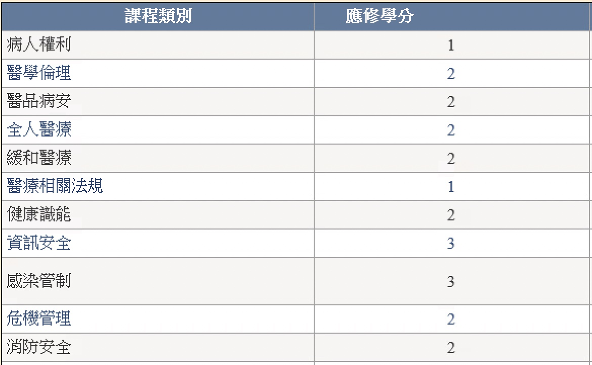

請各位醫師務必了解值班交班與請假系統，確保您的工作流程順暢。
持續學習與專業認證是醫師生涯的重要部分，請留意相關規定。
請務必於每年 10月31日 前完成所有必修學分。
所有醫師都必須持有有效的急救訓練證照，請定期檢查您的證照是否仍在效期內：
醫師必須接受『鎮靜麻醉藥物』訓練方能開立相關藥物，請至『學分得來速』接受線上學習，並定期檢查是否仍在效期內。
若您為主管階級，四五級主管應另外每年接受至少一學分的品管主管訓練課程；三級主管以上除每年至少一學分品管主管訓練課程外，每四年需完成五類品管主管訓練課程，包括員工職場復原力Resilience、團隊資源管理TRM、品質指標監測管理、醫療品質改善手法及根本原因分析RCA等。
若您對人事相關規定有任何疑問，請參考本院人力資源部人事管理規章，或直接與人資部同仁聯繫。